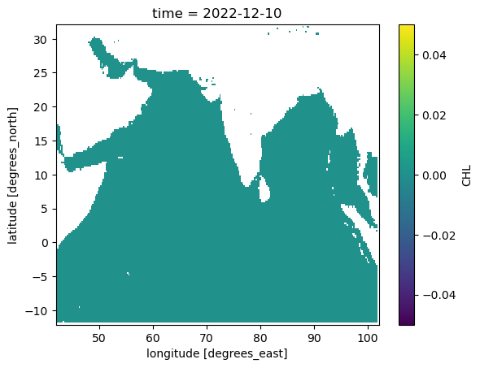

import numpy as np
import pandas as pd
import xarray as xr
import matplotlib.pyplot as plt
from datetime import datetime, timedeltaProcess downloaded files
In this notebook, the downloaded daily files will be processed into a uniform 0.25 degree grid with a uniform time dimension.
zarr_grid=xr.open_dataset('../grid.nc')zarr_time=xr.open_dataset("../time.nc")
date_start=str(zarr_time.time.min().values)[:10]
date_end=str(zarr_time.time.max().values)[:10]This time is
np.array([s.to_datetime64() for s in pd.date_range(‘1979/1/1’, ‘2022/12/31’, freq=‘1D’)]) import xarray as xr zarr_ds = xr.open_zarr(store=“/home/jovyan/shared/data/INDIAN_OCEAN_025GRID_DAILY.zarr”, consolidated=True) # get data zarr_time=zarr_ds[‘time’] zarr_time.time.encoding[‘units’] = ‘days since 1900-01-01’ zarr_time.attrs[‘title’]=‘UTC time at longitude 0 degrees’ zarr_time.to_netcdf(“../time.nc”)
# Load the functions
# standardize_chunk_float64(ds) is here
%run -i "~/indian-ocean-zarr/notebooks/functions.py"Chlorophyll-a
We need to do the following for each chlorophyll dataset:
- load all the daily files
- pad the dates since data do not go back to 1979
- trim the dates to the max in the zarr file
- interpolate (coarsen in this case) to the 0.25 degree grid
- save to a zarr file for chlorophyll
Create regridded data otherwise run out of memory
dataid=“cmems_obs-oc_glo_bgc-plankton_my_l4-gapfree-multi-4km_P1D” #dataid=“cmems_obs-oc_glo_bgc-plankton_my_l3-multi-4km_P1D” import os, fnmatch import xarray as xr indir = f’/home/jovyan/shared/data/copernicus/{dataid}’ outdir = f’/home/jovyan/shared/data/copernicus/{dataid}_regrid’ filenames = fnmatch.filter(os.listdir(indir), ’*.nc’) for filename in filenames: inf = os.path.join(indir, filename) outf = os.path.join(outdir, filename) ds = xr.open_dataset(inf) ds = ds.rename({“latitude”: “lat”, “longitude”: “lon”}) ds_interp = ds.interp_like(zarr_grid).compute() ds_interp.to_netcdf(outf)
Load the files, process and save
dataid="cmems_obs-oc_glo_bgc-plankton_my_l4-gapfree-multi-4km_P1D_regrid"
chloro1 = xr.open_mfdataset(f'~/shared/data/copernicus/{dataid}/*.nc')# Fix the time
chloro1_date_start = str(chloro1.time.min().values)[:10]
chloro_interp=chloro1.sel(time=slice(chloro1_date_start, date_end))# Pad time back to start of the zarr time
timepad=pd.to_datetime(chloro1.time[0].values)-pd.to_datetime(zarr_time.time[0].values)
chloro_interp = chloro_interp.pad(time=(timepad.days,0))
chloro_interp['time']=zarr_time.time.values# Fix vars to be float32 and chucks to be time 100 days
# Function defined in functions.py
chloro_interp = standardize_float64(chloro_interp)
chloro_interp = standardize_chunk(chloro_interp)# Check that we did not make a mistake
(chloro_interp['CHL'].sel(time="2022-12-10")-chloro1['CHL'].sel(time="2022-12-10")).plot()
# fix names
chloro_interp = chloro_interp.rename({"CHL": "CHL-gapfree", "CHL_uncertainty": "CHL_uncertainty-gapfree", "flags": "CHL_flags-gapfree"})from dask.distributed import Client;
client=Client(n_workers=4);
#client.close()# Add full attributes to the variables
for var in chloro_interp.data_vars:
chloro_interp[var].attrs.update(chloro_interp.attrs)# Save data to zarr to preserve chunks
#chloro_interp.to_zarr('~/shared/data/finalized/chlorophyll-gapfree')
chloro_interp.to_zarr('/home/jovyan/shared/data/finalized/chlorophyll.zarr')<xarray.backends.zarr.ZarrStore at 0x7fbc9e3910c0># test by opening
xr.open_zarr(f'~/shared/data/finalized/chlorophyll.zarr')<xarray.Dataset> Size: 17GB
Dimensions: (time: 16071, lat: 177, lon: 241)
Coordinates:
* lat (lat) float32 708B 32.0 31.75 31.5 ... -11.75 -12.0
* lon (lon) float32 964B 42.0 42.25 42.5 ... 101.8 102.0
* time (time) datetime64[ns] 129kB 1979-01-01 ... 2022-...
Data variables:
CHL-cloud (time, lat, lon) uint8 686MB dask.array<chunksize=(100, 177, 241), meta=np.ndarray>
CHL-gapfree (time, lat, lon) float32 3GB dask.array<chunksize=(100, 177, 241), meta=np.ndarray>
CHL-land (lat, lon) uint8 43kB dask.array<chunksize=(177, 241), meta=np.ndarray>
CHL-level3 (time, lat, lon) float32 3GB dask.array<chunksize=(100, 177, 241), meta=np.ndarray>
CHL_flags-gapfree (time, lat, lon) float32 3GB dask.array<chunksize=(100, 177, 241), meta=np.ndarray>
CHL_flags-level3 (time, lat, lon) float32 3GB dask.array<chunksize=(100, 177, 241), meta=np.ndarray>
CHL_uncertainty-gapfree (time, lat, lon) float32 3GB dask.array<chunksize=(100, 177, 241), meta=np.ndarray>
CHL_uncertainty-level3 (time, lat, lon) float32 3GB dask.array<chunksize=(100, 177, 241), meta=np.ndarray>
Attributes: (12/92)
Conventions: CF-1.8, ACDD-1.3
DPM_reference: GC-UD-ACRI-PUG
IODD_reference: GC-UD-ACRI-PUG
acknowledgement: The Licensees will ensure that original ...
citation: The Licensees will ensure that original ...
cmems_product_id: OCEANCOLOUR_GLO_BGC_L3_MY_009_103
... ...
time_coverage_end: 2024-04-18T02:58:23Z
time_coverage_resolution: P1D
time_coverage_start: 2024-04-16T21:12:05Z
title: cmems_obs-oc_glo_bgc-plankton_my_l3-mult...
westernmost_longitude: -180.0
westernmost_valid_longitude: -180.0- latPandasIndex
PandasIndex(Index([ 32.0, 31.75, 31.5, 31.25, 31.0, 30.75, 30.5, 30.25, 30.0, 29.75, ... -9.75, -10.0, -10.25, -10.5, -10.75, -11.0, -11.25, -11.5, -11.75, -12.0], dtype='float32', name='lat', length=177)) - lonPandasIndex
PandasIndex(Index([ 42.0, 42.25, 42.5, 42.75, 43.0, 43.25, 43.5, 43.75, 44.0, 44.25, ... 99.75, 100.0, 100.25, 100.5, 100.75, 101.0, 101.25, 101.5, 101.75, 102.0], dtype='float32', name='lon', length=241)) - timePandasIndex
PandasIndex(DatetimeIndex(['1979-01-01', '1979-01-02', '1979-01-03', '1979-01-04', '1979-01-05', '1979-01-06', '1979-01-07', '1979-01-08', '1979-01-09', '1979-01-10', ... '2022-12-22', '2022-12-23', '2022-12-24', '2022-12-25', '2022-12-26', '2022-12-27', '2022-12-28', '2022-12-29', '2022-12-30', '2022-12-31'], dtype='datetime64[ns]', name='time', length=16071, freq=None))
- Conventions :
- CF-1.8, ACDD-1.3
- DPM_reference :
- GC-UD-ACRI-PUG
- IODD_reference :
- GC-UD-ACRI-PUG
- acknowledgement :
- The Licensees will ensure that original CMEMS products - or value added products or derivative works developed from CMEMS Products including publications and pictures - shall credit CMEMS by explicitly making mention of the originator (CMEMS) in the following manner: <Generated using CMEMS Products, production centre ACRI-ST>
- citation :
- The Licensees will ensure that original CMEMS products - or value added products or derivative works developed from CMEMS Products including publications and pictures - shall credit CMEMS by explicitly making mention of the originator (CMEMS) in the following manner: <Generated using CMEMS Products, production centre ACRI-ST>
- cmems_product_id :
- OCEANCOLOUR_GLO_BGC_L3_MY_009_103
- cmems_production_unit :
- OC-ACRI-NICE-FR
- comment :
- average
- contact :
- servicedesk.cmems@acri-st.fr
- copernicusmarine_version :
- 1.3.1
- creation_date :
- 2024-04-25 UTC
- creation_time :
- 00:47:33 UTC
- creator_email :
- servicedesk.cmems@acri-st.fr
- creator_name :
- ACRI
- creator_url :
- http://marine.copernicus.eu
- date_created :
- 2024-04-25T00:47:33Z
- distribution_statement :
- See CMEMS Data License
- duration_time :
- PT107179S
- earth_radius :
- 6378.137
- easternmost_longitude :
- 180.0
- easternmost_valid_longitude :
- 180.00001525878906
- file_quality_index :
- 0
- geospatial_bounds :
- POLYGON ((90.000000 -180.000000, 90.000000 180.000000, -90.000000 180.000000, -90.000000 -180.000000, 90.000000 -180.000000))
- geospatial_bounds_crs :
- EPSG:4326
- geospatial_bounds_vertical_crs :
- EPSG:5829
- geospatial_lat_max :
- 89.97916412353516
- geospatial_lat_min :
- -89.97917175292969
- geospatial_lon_max :
- 179.9791717529297
- geospatial_lon_min :
- -179.9791717529297
- geospatial_vertical_max :
- 0
- geospatial_vertical_min :
- 0
- geospatial_vertical_positive :
- up
- grid_mapping :
- Equirectangular
- grid_resolution :
- 4.638312339782715
- history :
- Created using software developed at ACRI-ST
- id :
- 20240417_cmems_obs-oc_glo_bgc-plankton_myint_l3-multi-4km_P1D
- institution :
- ACRI
- keywords :
- EARTH SCIENCE > OCEANS > OCEAN CHEMISTRY > CHLOROPHYLL, EARTH SCIENCE > BIOLOGICAL CLASSIFICATION > PROTISTS > PLANKTON > PHYTOPLANKTON
- keywords_vocabulary :
- NASA Global Change Master Directory (GCMD) Science Keywords
- lat_step :
- 0.0416666679084301
- license :
- See CMEMS Data License
- lon_step :
- 0.0416666679084301
- naming_authority :
- CMEMS
- nb_bins :
- 37324800
- nb_equ_bins :
- 8640
- nb_grid_bins :
- 37324800
- nb_valid_bins :
- 9704694
- netcdf_version_id :
- 4.3.3.1 of Jul 8 2016 18:15:50 $
- northernmost_latitude :
- 90.0
- northernmost_valid_latitude :
- 82.70833587646484
- overall_quality :
- mode=myint
- parameter :
- Chlorophyll-a concentration,Phytoplankton Functional Types
- parameter_code :
- CHL,DIATO,DINO,HAPTO,GREEN,PROKAR,PROCHLO,MICRO,NANO,PICO
- pct_bins :
- 100.0
- pct_valid_bins :
- 26.000659079218106
- period_duration_day :
- P1D
- period_end_day :
- 20240417
- period_start_day :
- 20240417
- platform :
- Aqua,Suomi-NPP,Sentinel-3a,JPSS-1 (NOAA-20),Sentinel-3b
- processing_level :
- L3
- product_level :
- 3
- product_name :
- 20240417_cmems_obs-oc_glo_bgc-plankton_myint_l3-multi-4km_P1D
- product_type :
- day
- project :
- CMEMS
- publication :
- Gohin, F., Druon, J. N., Lampert, L. (2002). A five channel chlorophyll concentration algorithm applied to SeaWiFS data processed by SeaDAS in coastal waters. International journal of remote sensing, 23(8), 1639-1661 + Hu, C., Lee, Z., Franz, B. (2012). Chlorophyll a algorithms for oligotrophic oceans: A novel approach based on three-band reflectance difference. Journal of Geophysical Research, 117(C1). doi: 10.1029/2011jc007395 + Xi H, Losa S N, Mangin A, Garnesson P, Bretagnon M, Demaria J, Soppa M A, Hembise Fanton d Andon O, Bracher A (2021) Global chlorophyll a concentrations of phytoplankton functional types with detailed uncertainty assessment using multi-sensor ocean color and sea surface temperature satellite products, JGR, in review.
- publisher_email :
- servicedesk.cmems@mercator-ocean.eu
- publisher_name :
- CMEMS
- publisher_url :
- http://marine.copernicus.eu
- references :
- http://www.globcolour.info GlobColour has been originally funded by ESA with data from ESA, NASA, NOAA and GeoEye. This version has received funding from the European Community s Seventh Framework Programme ([FP7/2007-2013]) under grant agreement n. 282723 [OSS2015 project].
- registration :
- 5
- sensor :
- Moderate Resolution Imaging Spectroradiometer,Visible Infrared Imaging Radiometer Suite,Ocean and Land Colour Instrument
- sensor_name :
- MODISA,VIIRSN,OLCIa,VIIRSJ1,OLCIb
- sensor_name_list :
- MOD,VIR,OLA,VJ1,OLB
- site_name :
- GLO
- software_name :
- globcolour_l3_reproject
- software_version :
- 2022.2
- source :
- surface observation
- southernmost_latitude :
- -90.0
- southernmost_valid_latitude :
- -66.33333587646484
- standard_name_vocabulary :
- NetCDF Climate and Forecast (CF) Metadata Convention
- start_date :
- 2024-04-16 UTC
- start_time :
- 21:12:05 UTC
- stop_date :
- 2024-04-18 UTC
- stop_time :
- 02:58:23 UTC
- summary :
- CMEMS product: cmems_obs-oc_glo_bgc-plankton_my_l3-multi-4km_P1D, generated by ACRI-ST
- time_coverage_duration :
- PT107179S
- time_coverage_end :
- 2024-04-18T02:58:23Z
- time_coverage_resolution :
- P1D
- time_coverage_start :
- 2024-04-16T21:12:05Z
- title :
- cmems_obs-oc_glo_bgc-plankton_my_l3-multi-4km_P1D
- westernmost_longitude :
- -180.0
- westernmost_valid_longitude :
- -180.0